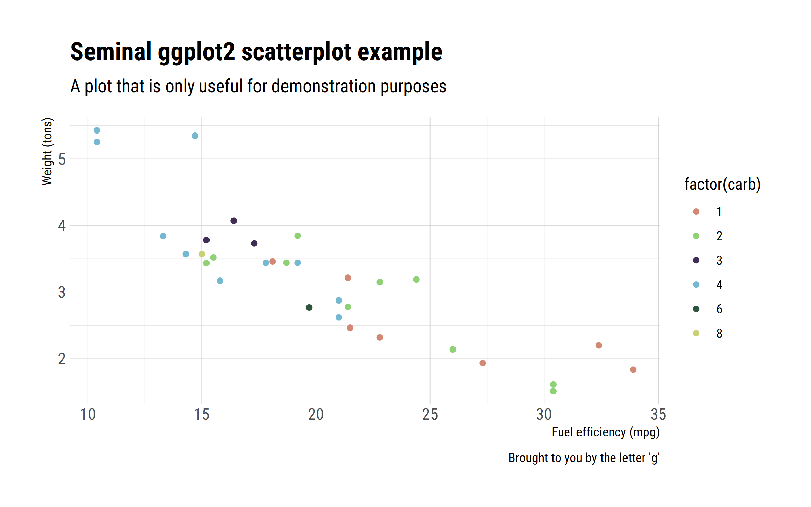

This a sample document to test Jvuetify.
This is some markup with some inline equation \alpha = \beta+\gamma
\alpha = \beta+\gamma
HTML tables can be incorporated in markdown documents.
We can output a variety of figures
“”
import PlotlyJS
function area1()
trace1 = PlotlyJS.scatter(;x=1:4, y=[0, 2, 3, 5], fill="tozeroy")
trace2 = PlotlyJS.scatter(;x=1:4, y=[3, 5, 1, 7], fill="tonexty")
PlotlyJS.plot([trace1, trace2])
end
a = area1()
Jvuetify.plotlygraph(a,"areagraph")